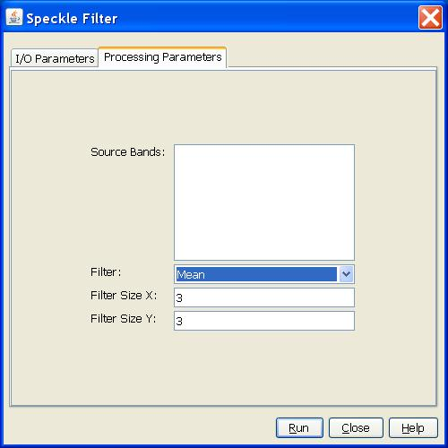
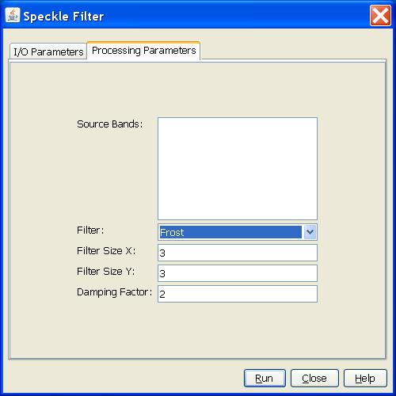

Speckle Filter Operator
SAR images have inherent salt and pepper like texturing called
speckles which degrade the quality of the image and make interpretation of features more
difficult. Speckles are caused by random constructive and destructive interference
of the de-phased but coherent return waves scattered by the elementary scatters
within each resolution cell. Speckle noise reduction can be applied either by
spatial filtering or multilook processing.
Filters Supported
The operator supports the following speckle filters for handling speckle noise of
different distributions (Gaussian, multiplicative or Gamma):
- Boxcar (mean)
- Median
- Frost
- Lee
- Refined Lee
- Gamma-MAP
- Lee Sigma
- IDAN
- MuLog
Parameters Used
For most filters, the following parameters should be selected (see figure 1
for example):
- Source Band: All bands (real or virtual) of the source product. User can
select one or more bands for producing filtered images. If no bands are
selected, then by default all bands will be selected. For complex product,
only the intensity band can be selected.
- Filter: The speckle filter.
- Size X: The filtering kernel width.
- Size Y: The filtering kernel height.
- Frost Damping Factor: The damping factor for Frost filter.

Figure 1. Dialog box for Mean filter.
For Frost filter, one extra parameter should be selected (see figure 2):
- Frost Damping Factor: The damping factor for Frost filter.

Figure 2. Dialog box for Frost
filter
The Refined Lee filter has no extra parameters.
For the Lee Sigma filter (the default filter), the following parameters are used:
- Number of Looks: The number of looks of the input image (1, 2, 3 or 4). Default: 1.
- Window Size: The size of the filtering window (5x5, 7x7, 9x9, 11x11, 13x13, 15x15 or 17x17). Default: 7x7.
- Point Target Window Size: The window used to detect point targets, which are kept unfiltered (3x3 or 5x5). Default: 3x3.
- Sigma: The sigma range used to select the pixels in the window that are averaged (0.5, 0.6, 0.7, 0.8 or 0.9). Default: 0.9.
For the IDAN (Intensity-Driven Adaptive-Neighbourhood) filter:
- Adaptive Neighbourhood Size: The maximum number of pixels in the adaptive neighbourhood (greater than 1, up to 200). Default: 50.
For the Lee and Gamma Map filters, the equivalent number of looks (ENL) is needed:
- Estimate Equivalent Number of Looks: If selected (the default in the dialog), the ENL is estimated from the image.
- Number of Looks: If ENL estimation is not selected, the ENL value to use. Default: 1.0.
The Size X and Size Y values accept integers from 2 to 100 (default 3). Speckle filters should be applied to linear intensity or amplitude data, not to data converted to dB.
References
- Lee, J.-S., Pottier, E. (2009). Polarimetric Radar Imaging: From Basics to Applications. CRC Press, Boca Raton. doi:10.1201/9781420054989
- Robinson, G. S. (1977). Edge detection by compass gradient masks. Computer Graphics and Image Processing, 6(5), 492–501. doi:10.1016/S0146-664X(77)80024-5
- Frost, V. S., Stiles, J. A., Shanmugan, K. S., Holtzman, J. C. (1982). A model for radar images and its application to adaptive digital filtering of multiplicative noise. IEEE Transactions on Pattern Analysis and Machine Intelligence, PAMI-4(2), 157–166. doi:10.1109/TPAMI.1982.4767223
- Mansourpour, M., Rajabi, M. A., Blais, J. A. R. (2006). Effects and performance of speckle noise reduction filters on active radar and SAR images. International Archives of the Photogrammetry, Remote Sensing and Spatial Information Sciences, XXXVI-1/W41, ISPRS Workshop on Topographic Mapping from Space, Ankara, Turkey.
- Deledalle, C.-A., Denis, L., Tabti, S., Tupin, F. (2017). MuLoG, or how to apply Gaussian denoisers to multi-channel SAR speckle reduction? IEEE Transactions on Image Processing, 26(9), 4389–4403. doi:10.1109/TIP.2017.2713946
- Lee, J.-S. (1981). Refined filtering of image noise using local statistics. Computer Graphics and Image Processing, 15(4), 380–389. doi:10.1016/S0146-664X(81)80018-4
- Lee, J.-S., Wen, J.-H., Ainsworth, T. L., Chen, K.-S., Chen, A. J. (2009). Improved sigma filter for speckle filtering of SAR imagery. IEEE Transactions on Geoscience and Remote Sensing, 47(1), 202–213. doi:10.1109/TGRS.2008.2002881
- Lopes, A., Nezry, E., Touzi, R., Laur, H. (1993). Structure detection and statistical adaptive speckle filtering in SAR images. International Journal of Remote Sensing, 14(9), 1735–1758. doi:10.1080/01431169308953999
- Vasile, G., Trouvé, E., Lee, J.-S., Buzuloiu, V. (2006). Intensity-driven adaptive-neighborhood technique for polarimetric and interferometric SAR parameters estimation. IEEE Transactions on Geoscience and Remote Sensing, 44(6), 1609–1621. doi:10.1109/TGRS.2005.864142
Processing parameters (reference)
GPT operator: Speckle-Filter. Generated from the operator source; parameter names are those used in GPT and graph XML.
| Parameter | Type | Default | Allowed values | Unit | Description |
|---|
sourceBands | String[] | | | | The list of source bands. |
filter | String | Lee Sigma | None, Boxcar, Median, Frost, Gamma Map, Lee, Refined Lee, Lee Sigma, IDAN, MuLoG | | Filter |
filterSizeX | int | 3 | (1, 100] | | The kernel x dimension |
filterSizeY | int | 3 | (1, 100] | | The kernel y dimension |
dampingFactor | int | 2 | (0, 100] | | The damping factor (Frost filter only) |
estimateENL | boolean | false | | | Estimate Equivalent Number of Looks |
enl | double | 1.0 | (0, *) | | The number of looks |
numLooksStr | String | 1 | 1, 2, 3, 4 | | Number of Looks |
windowSize | String | 7x7 | 5x5, 7x7, 9x9, 11x11, 13x13, 15x15, 17x17 | | Window Size |
targetWindowSizeStr | String | 3x3 | 3x3, 5x5 | | Point target window Size |
sigmaStr | String | 0.9 | 0.5, 0.6, 0.7, 0.8, 0.9 | | Sigma value (probability range) used by the Lee Sigma filter |
anSize | int | 50 | (1, 200] | | The Adaptive Neighbourhood size |
Background
Prerequisites
Next step